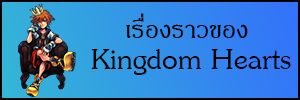
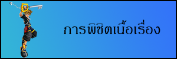
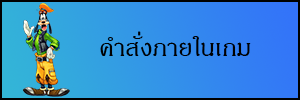
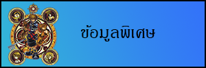
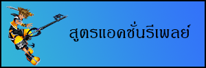

|
|||
|  |
เรื่องราวแห่งคิงดอมฮาร์ท
คิงดอมฮาร์ทภาคแรก อันเป็นจุดเริ่มต้นของการผจญภัย สถานที่เริ่มต้นการผจญภัยคือ เกาะแห่งโชคชะตา เป็นสถานที่ซึ่งโซร่าอาศัยอยู่ร่วมกับเพื่อนสนิททั้ง 2 คน คือริคุและไคริ ในคือก่อนที่พวกเขาจะออกเดินทางด้วยแพที่พวกเขาสร้างขึ้นเพื่อออกเดินทางไปสู่โลกกว้าง กลับกลายเป็นคืนที่พวกเขาทั้ง 3 คน ต้องพลัดพรากจากกันอย่างไม่คาดฝัน พร้อมกับการปรากฎประตูลึกลับที่นำไปสู่สถานที่อื่นๆที่ไม่รู้จัก นั้นก็คือจุดเริ่มต้นของโซร่า ที่เริ่มออกเดินทางค้นหาเพื่อนๆของเขา ในขณะเดินทาง โซร่าได้พบกับเพื่อนร่วมเดินทางกลุ่มใหม่ คือ โดนัลด์ดั๊ก,กูฟี่และจิมิน คริคเก็ท ซึ่งเป็นผู้ติดตามของราชามิกกี้ เม้าส์ ที่ออกเดินทางตามหา คีย์เบลดมาสเตอร์ ตามคำสั่งของราชา และพวกเขาก็ได้ร่วมเดินทางกับโซร่าตั้งแต่นั้นมาพวกเขาได้เดินทางไปยังสถานที่ต่างๆ เพื่อตามหาเป้าหมายพร้อมกับกำจัดพวกฮาร์ทเลสที่แย่งชิงหัวใจจากมนุษย์ พวกเขาต้องต่อสู้กับศัตรูตัวฉกาจ ทั้งแม่มดมาเลฟิเซนท์กับพีทสมุนคู่ใจของเธอ เธอคือผู้บงการพวก ฮาร์ทเลสทั้งหมด และอันเซ็มผู้อัจฉริยะที่วางแผนการทั้งหมดเพื่อยึดครองคิงดอมฮาร์ท อาณาจักรแห่งหัวใจ พร้อมเพื่อนรักริคุที่ต้องกลายเป็นศัตรูกัน เพราะมีเป้าหมายที่ต่างกัน เรื่องราวในภาคแรกนี้ได้จบลง เมื่อพวกเขากำจัดอันเซ็มลงได้ แต่ทุกอย่างก็จบลงด้วยการแยกทาง กับเพื่อนรักของโซร่าทั้ง 2 คน ริคุกับราชามิกกี้เมาส์ถูกขังอยู่ในโลกแห่งความมืด ไคริกลับไปที่เกาะแห่งโชคชะตาเพียงคนเดียว ส่วนพวกโซร่าก็...... 
หลังจากภาคแรกพวกโซร่า เดินทางไปถึงปราสาทแห่งหนึ่ง ชื่อของปราสาทนั่นก็คือ ปราสาทการลืมเลือน พวกเขาได้พบกับบุคคลกลุ่มใหม่ คือกลุ่มคนที่ใส่ชุดคลุมสีดำ ที่เป็นสมาชิกขององค์กรปริศนา ได้แก่ มาร์ลูเซีย เวเซน ลาร์เซน แอ็กเซล และสาวน้อยที่ชื่อ นามิเน่ นามิเน่ผู้มีความสามารถในการจัดเรียงความทรงจำของคน ให้เป็นแบบใดก็ได้ เธอได้ถูกสมาชิกองค์กรปริศนา หลอกใช้ให้เรียงความทรงจำของโซร่าใหม่ เพื่อเป้าหมายของพวกเขาที่ต้องการยึดครองคีย์เบลดมาสเตอร์ และทรยศองค์กรของตนเองแต่ด้วยจิตใจที่ดีงามของโซร่า นามิเน่ก็กลับตัวกลับใจมาช่วยโซร่า เรื่องราวในการเดินทางในภาคนี้จบลง โดยที่นามิเน่ได้ช่วยเหลือให้พวกโซร่าฟื้นความทรงจำ โดยให้หลับไหลในตู้แก้ว และสัญญากันไว้จะพบกันอีก ส่วนแอ็กเซลก็ยังมีชีวิตอยู่พร้อมกับปริศนาเกี่ยวกับตัวเขา 
ระหว่างที่พวกโซร่าหลับไหลในตู้แก้ว เพื่อฟื้นความทรงจำ ระหว่างนี้ก็มีเรื่องราวต่างๆ เกิดขึ้นมากมายกับเพื่อนของเขา ริคุทำอะไรอยู่ที่ไหน อันเซ็มที่พวกโซร่ากำจัดไปแล้วทำไมมีชีวิตอยู่ ชายชุดแดงปริศนาที่มาพร้อมกับอันเซ็ม เด็กหนุ่มผมสีทองที่พบในฉากจบภาค Chain of Memories แอ็กฌซลกำลังทำอะไรต่อ องค์กรปริศนาคือใคร ไคริล่ะ.. สัญญาของนามิเน่ล่ะ.. นี่คือเรื่องราวแห่งการเดินทางครั้งใหม่ เมื่อพวกโซร่าตื่นขึ้นมา หลังจากที่หลับไหลในตู้แก้ว เพื่อฟื้นความทรงจำเป็นเวลานานถึง 1 ปี.... 

โซร่า/Soraเด็กหนุ่มที่ถูกเลือกโดยคีย์เบลดดาบมหัศจรรย์ ออกผจญภัยพร้อมกับ โดนัลด์ กูฟี่ เพื่อตามหาไคริเพื่อนสมัยเด็ก และช่วยเหลือโลกที่ถูกยืดครอง โดยความมืดหลังจากนั้นก็ยังมุ่งไปที่ประตูแห่งความมืด เพื่อเดินทางตามหาริคุต่อไป และตกอยู่ในสภาพหลับใหลเป็นเวลานาน ในระหว่างการเดินทาง ในที่แห่งใหม่ ความรู้สึกใหม่ เสื้อผ้าใหม่ ก็เริ่มออกเดินทางตามหาริคุ เพื่อนสนิท ที่ติดอยู่ในโลกแห่งความมืดอีกครั้งหนึ่ง
โซร่า/Soraเพื่อนสมัยเด็กของโซร่าและริคุเป็น 1 ในเจ้าหญิงทั้ง 7 ที่เกี่ยวข้องกับกุญแจการเปิดสู่โลกแห่งความมืด ในแต่ละวันได้แต่เก็บความรู้สึกที่พูดออกมาว่า อยากพบเพราะคิดถึงโซร่า แต่กลับไม่มีความทรงจำที่เกี่ยวข้องกับโซร่า ทำไมหรือ....ต่อมากลายเป็นเพื่อนกับโอเล็ท เพนซ์และเฮย์เนอร์ที่ทไวไลท์ทาวน์ หลังจากหลุดเข้าไปในประตูความมืดที่ใครบางคนสร้างไว้ แต่ก็ถูกจับตัวโดยแอ็กเซล ที่ตามมา แล้วก็ทำตามคำเรียกร้องของหัวใจที่อยากพบโซร่าอีกครั้งหนึ่ง 
ริคุ/Rikuเพื่อนในวัยเด็กของโซร่า แต่มีร่างกายเปลี่ยนไปเพราะต้องการย้อมร่างกายของตนเองด้วยความมืด เพื่อใช้พลังแห่งความมืดในการช่วยโซร่า และสามารถกลับมาเป็นดังเดิม เพราะการระเบิดของเครื่องมือที่ใช้ดูดกลืนคิงดอมฮาร์ทที่อันเซ็มผู้อัจฉริยะตัวจริงสร้างขึ้น มีหัวใจที่ไม่ยอมแพ้ต่อความมืดตามที่อันเซ็มต้องการ ซึ่งอาจจะเป็นสิ่งมหัศจรรย์จริงๆ....
โดนัลด์ ดั๊ก/Donald Duckผู้ใช้เวทย์มนต์ที่รับใช้องค์ราชามิกกี้เมาส์ เมื่อ 1 ปีที่แล้ว ได้ออกเดินทางจากปราสาทดิสนีย์เพื่อตามหาองค์ราชา และได้พบกับโซร่าระหว่างทางหลังจากช่วยเหลือโลกที่ถูกปกคลุมด้วยความมืดด้วยกันกับโซร่า ก็ออกเดินทางค้นรองรอยขององค์ราชาที่ยังอยู่ในโลกแห่งความมืดต่อไป แต่ก็ต้องอยู่ในสภาพหลับไหลที่ยาวนานด้วยกันกับโซร่า 
หัวหน้ากองทัพที่รับใช้องค์ราชาเมื่อ 1 ปี ที่แล้ว ได้ออกเดินทางจากปราสาทดิสนีย์เพื่อตามหาองค์ราชาที่หายตัวไป ตอนนั้นได้รับจดหมายจากองค์ราชาที่บอกว่าให้ออกเดินทางไปพร้อมกับผู้ที่ถือคีย์เบลด จึงร่วมผจญภัยไปพร้อมกับโซร่าหลังจาดที่องค์ราชายังคงอยู่ที่โลกแห่งความมืด ก็ได้เดินทางต่อไปเพื่อค้นหาร่องรอย และตกอยู่ในสภาพหลับไหล เช่นเดียวกับพวกโดนัลด์ 
ราชาผู้ปกครองปราสาทดิสนีย์ รู้เรื่องเกียวกับภาวะวิกฤติของโลกต่างๆ จึงได้ออกท่องโลกเพื่อค้นหาเป้าหมายของพวกโนบอดี้,องกรค์ที่ 13 พร้อมกับต่อสู้กับพวกฮาร์ทเลส

นามิเน่/Namineสาวน้อยที่มีความสามารถในการควบคุมความทรงจำของผู้คนได้มีความสัมพันธ์ที่ใกล้ชิดกับโซร่าเลยทีเดียว แต่โซร่ากลับจำเธอไม่ได้เสียแล้ว......
อันเซ็ม/Ansem The Wifeชายผู้ปกปิดตัวเองภายใต้ผ้าคลุมและเรียกตัวเองว่าดิสร่างที่แท้จริงก็คือ อันเซ็ม ผู้อัจฉริยะตัวจริง ครั้งหนึ่งได้หยุดการวิจัยลงกลางคัน เพราะกังวลว่าการวิจัยเรื่องฮาร์ทเลสและหัวใจ จะส่งผลให้ระบบของโลกยุ่งเหยิง แต่ว่าเซอานอร์ทที่เป็นลูกศิษย์ ได้แย่งชิงผลการวิจัยของเขาไป ตั้งแต่นั้นมาก็ฝังใจกับการแก้แค้นลูกศิษย์ แต่ก็เปลี่ยนใจเมื่อเห็นความตั้งใจจริงของริคุที่อยากช่วยโซร่า จนถึงขั้นเปลี่ยนแปลงร่างกายของตนเอง 
แม่มดมาเลฟิเซ็นท์/Maleficentแม่มดผู้ร้ายกาจที่ควบคุมเวทมนต์แห่งความมืด ก่อนหน้านี้ได้ควบคุมฮาร์ทเลสในฐานะผู้นำของผู้ที่ใช้พลังแห่งความมืด เป็นคนที่ยุยงริคุและเป็นคนที่สร้างเส้นทางสู่โลกแห่งความมืดด้วยเช่นกันหลังจากถูกพวกโซร่ากำจัก อีก 1 ปี ต่อมาก็ฟื้นคืนชีพขึ้นมาโดยพึ่งพาพลังเวทมนต์ที่หลงเหลืออยู่เพียงน้อยนิด 
พีท/Peteเป็นผู้รวบรวมกองทัพอาร์ทเลยกลับมายังโลก ครั้งหนึ่งถูกจับขังในคุกอีกมิติหนึ่งโดยองค์ราชา เพื่อให้สำนึกผิด และรู้จักกับพวกโดนัลด์ด้วย พอมาถึงเรื่องราวช่วงนี้ก็ได้หลบหนีจากคุกได้ และพบกับแม่มดมาเลฟิเซนท์ จึงคิดทำการเข้าไปยึดครองโลกทั้งหมดโดยใช้ฮาร์ทเลส
องค์กรปริศนาที่เริ่มปรากฏตัวตั้งแต่ภาค Chain of Memories ทุกคนจะใส่ชุดคลุมสีดำ ร่างกายเป็นโนบอดี้และเป็นชาวโลกแห่งความมืด เนื่องจากโนบอดี้เป็นพวกที่มีร่างกายไม่สมบูรณ์ ไร้ความรัก ไร้จิตใจ จึงมีความปรารถนาอย่างแรงกล้าที่จะสร้างคิงดอมฮาร์ทขึ้นมาเพื่อทำให้ตัวตนของตนเองกลายเป็นตัวตนที่สมบูรณ์ ไม่ว่าจะใช้วิธีการใดก็ตาม และสมาชิกจะมีทั้งหมด 13 คน ซึ่งสมาชิกบางส่วนได้ถูกกำจัดไปตั้งแต่ 1 ปีก่อนหน้านี้ ในภาค Chain of Memories  สมาชิกหมายเลข 1 และเป็นผู้นำขององค์กร ร่างจริงนั้นก็คือโนบอดี้ของเซอานอร์ท ลูกศิษย์ของนักปราชญ์อันเซ็ม เซอานอร์ทอ้างตัวเองเป็นอันเซ็มและมุ่งวิจัยเกี่ยวกับหัวใจและประตูของโลกมานาน ขณะที่จิตใจของเซอานอร์ทนั้นกลายเป็นฮาร์ทเลส ร่างกายที่เหลือของเขาก็เกิดมาในฐานะโนบอดี้แทน เซ็มนาสได้ใช้โซร่าในการรวบรวมหัวใจที่ปรากฏออกมา เมื่อฮาร์ทเลสถูกกำจัด  |
||

|
|||
|  | |||
|  | |||
|  | |||
|  | |||
|
|
|
|